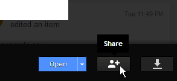
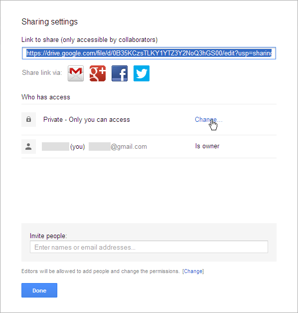
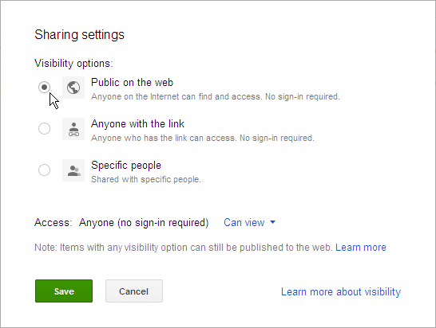
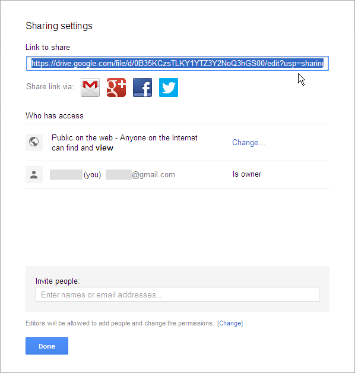

↩ Return to main map-making instructions
How to set up your map on Google Drive
The locations file must be in .txt or .html format, neither of which are document types that Google Drive will create by default from the web page, so create the file using a text editor such as Notepad, and then upload it to Google Drive.
Tips:
- You can add better Google Drive support for text files by adding a notepad app - to do this go to Options → Manage apps.
- Templates and examples of locations files can be found here
Make the file "Public on the web"
-
Open the file in Google Drive and click "Share"
 -
Under "Who has Access", click "Change..."
 -
Change the Visibility option to "Public on the web", and click "Save"

Your locations file is now available on the web, the last step is to put its unique code into the map URL.
Get your file's unique code
Copy the text in the "Link to share" box

https://drive.google.com/file/d/0B35KCzsTLKY1YTZ3Y2NoQ3hGS00/edit?usp=sharing
Everything between https://docs.google.com/file/d/ and /edit?usp=sharing is your file's unique code - I've highlighted the code in green. This code is what you need.
Add your file's unique code to the end of this URL...
https://googledrive.com/host/0B35KCzsTLKY1bXBnOGdSR0V0ZUU/index.html?googlesrc=
... and you have the URL for your new map. For example:
https://googledrive.com/host/0B35KCzsTLKY1bXBnOGdSR0V0ZUU/index.html?googlesrc=0B35KCzsTLKY1YTZ3Y2NoQ3hGS00